timestamp: 20260512_163658
config_path: experiments/configs/medium.yaml
config: {'n_students': 1000, 't_steps': 100, 'master_seed': 42, 'method_seed': 1, 'n_bootstrap': 10000, 'behaviour_proportions': {'honest': 0.6, 'guesser': 0.15, 'copier': 0.1, 'help_seeker': 0.15}, 'retention_intervals_days': [1, 3, 7, 14], 'forgetting_lambda': 0.05, 'prereq_perturbation_eps': 0.1, 'n_jobs': -1}
environment: {'python': '3.12.13', 'platform': 'Linux-7.0.3-arch1-2-x86_64-with-glibc2.43', 'git_hash': 'a3b7b946d93c9548d46d810290d34de906bfbc1a', 'packages': {'numpy': '2.4.4', 'scipy': '1.17.1', 'pandas': '3.0.3', 'matplotlib': '3.10.9'}, 'timestamp': '2026-05-12T16:36:59'}
{'metric': 'm_robust', 'subsample': 'guesser+copier', 'n_b3': 124, 'n_b4': 0, 't': None, 'p_value': None, 'cohen_d': None, 'confirmed': False, 'note': 'insufficient low-q transfer observations to evaluate'}
{'metric': 'm_robust', 'comparison': 'L2T (B3+B4) vs Random (B1), pooled methodologies', 'n_b1': 737, 'n_l2t': 224, 'mean_b1': 0.5425109876790399, 'mean_l2t': 0.8597741242701967, 't': 14.259447354999095, 'p_value': 3.3669283294913157e-40, 'cohen_d': 0.9525154704771633, 'confirmed': True}
{'m_transfer_b3_vs_b2': {'n_b2': 2000, 'n_other': 2000, 'mean_b2': 0.7325, 'mean_other': 0.7759375, 't': 4.585968336254965, 'p_value': 2.328675922293374e-06, 'cohen_d': 0.14502105219978623, 'confirmed': False}, 'm_transfer_b4_vs_b2': {'n_b2': 2000, 'n_other': 2000, 'mean_b2': 0.7325, 'mean_other': 0.7713125, 't': 4.094649477587081, 'p_value': 2.155895506257082e-05, 'cohen_d': 0.12948418569193754, 'confirmed': False}, 'm_retention_7d_b3_vs_b2': {'n_b2': 2000, 'n_other': 2000, 'mean_b2': -0.2109375, 'mean_other': -0.229, 't': -2.6737398452287833, 'p_value': 0.9962342157563961, 'cohen_d': -0.08455107781669041, 'confirmed': False}, 'm_retention_7d_b4_vs_b2': {'n_b2': 2000, 'n_other': 2000, 'mean_b2': -0.2109375, 'mean_other': -0.2188125, 't': -1.1574688620616322, 'p_value': 0.8764250001294415, 'cohen_d': -0.036602379248380154, 'confirmed': False}}
{'m_mastery_b2_vs_b1': {'mean_b1': 0.3378578025919879, 'mean_other': 0.3606532359103539, 't': 3.4051323447627477, 'p_value': 0.00033397668457715277, 'cohen_d': 0.1076797394376001, 'confirmed': True}, 'm_transfer_b2_vs_b1': {'mean_b1': 0.7500625, 'mean_other': 0.7325, 't': -1.8661670744560193, 'p_value': 0.9689543205121309, 'cohen_d': -0.059013384496940505, 'confirmed': False}, 'm_retention_7d_b2_vs_b1': {'mean_b1': -0.219625, 'mean_other': -0.2109375, 't': 1.2688065203033991, 'p_value': 0.10229197666813078, 'cohen_d': 0.04012318514231416, 'confirmed': False}, 'm_efficiency_b2_vs_b1': {'mean_b1': 0.003378578025919879, 'mean_other': 0.0036065323591035394, 't': 3.4051323447627526, 'p_value': 0.0003339766845771467, 'cohen_d': 0.10767973943760023, 'confirmed': True}, 'm_mastery_b3_vs_b1': {'mean_b1': 0.3378578025919879, 'mean_other': 0.3568779043688644, 't': 2.8746476389255915, 'p_value': 0.0020332119160478613, 'cohen_d': 0.09090434009430176, 'confirmed': True}, 'm_transfer_b3_vs_b1': {'mean_b1': 0.7500625, 'mean_other': 0.7759375, 't': 2.8050700070418704, 'p_value': 0.002527438141829133, 'cohen_d': 0.08870410218476868, 'confirmed': True}, 'm_retention_7d_b3_vs_b1': {'mean_b1': -0.219625, 'mean_other': -0.229, 't': -1.3801977390145261, 'p_value': 0.9161985030585164, 'cohen_d': -0.04364568476700543, 'confirmed': False}, 'm_efficiency_b3_vs_b1': {'mean_b1': 0.003378578025919879, 'mean_other': 0.003568779043688644, 't': 2.8746476389255924, 'p_value': 0.002033211916047855, 'cohen_d': 0.09090434009430177, 'confirmed': True}, 'm_mastery_b4_vs_b1': {'mean_b1': 0.3378578025919879, 'mean_other': 0.35785132604932174, 't': 3.0775465857025663, 'p_value': 0.001050676954762377, 'cohen_d': 0.09732056816094697, 'confirmed': True}, 'm_transfer_b4_vs_b1': {'mean_b1': 0.7500625, 'mean_other': 0.7713125, 't': 2.301885496124108, 'p_value': 0.010696401249896351, 'cohen_d': 0.07279201080658873, 'confirmed': True}, 'm_retention_7d_b4_vs_b1': {'mean_b1': -0.219625, 'mean_other': -0.2188125, 't': 0.11878021722949342, 'p_value': 0.45272772523873855, 'cohen_d': 0.0037561602741477433, 'confirmed': False}, 'm_efficiency_b4_vs_b1': {'mean_b1': 0.003378578025919879, 'mean_other': 0.0035785132604932175, 't': 3.077546585702569, 'p_value': 0.0010506769547623661, 'cohen_d': 0.09732056816094704, 'confirmed': True}}
{'violations_b3': 0, 'violations_b4': 0, 'n_b3': 2000, 'n_b4': 2000, 'h4_confirmed': True}
InvariantReport(theory_first=True, no_spoiler=True, transfer_gate=True, n_states=16, n_transitions=24, n_traces_checked=5000, seconds=0.26044527500198456)
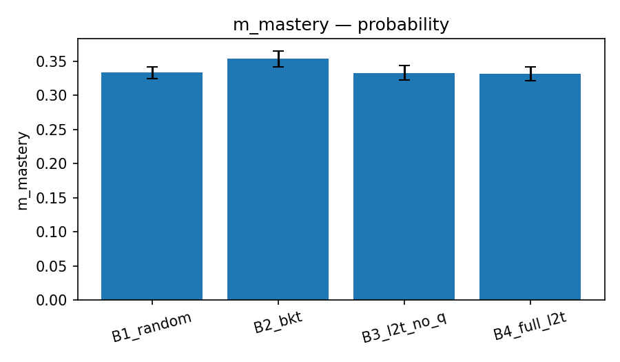
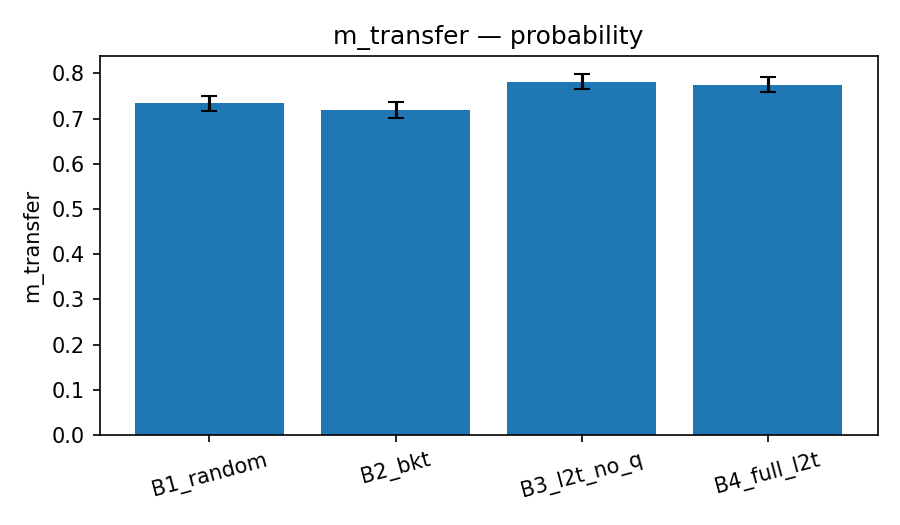
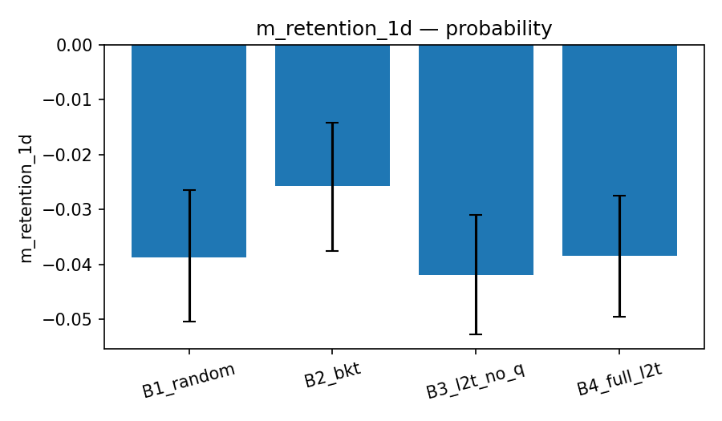
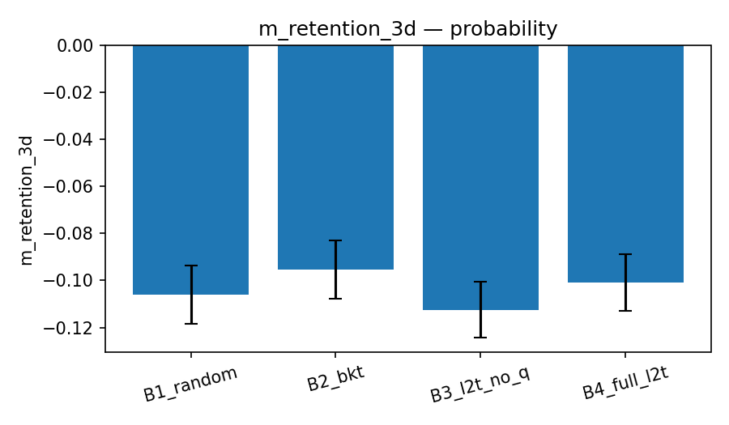
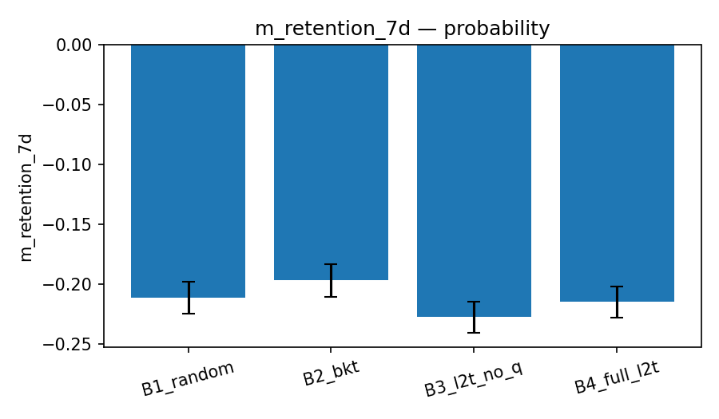
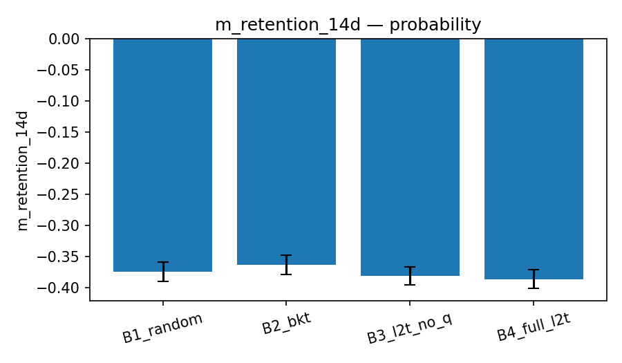
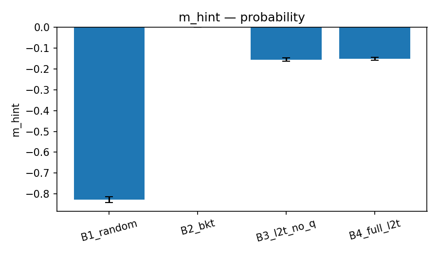
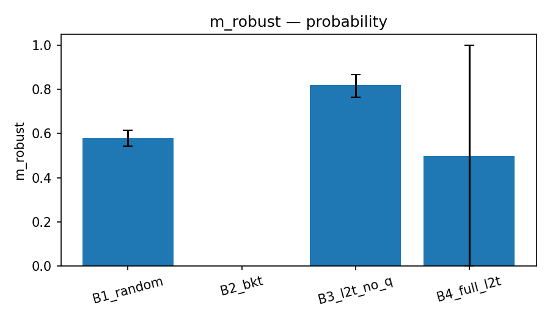
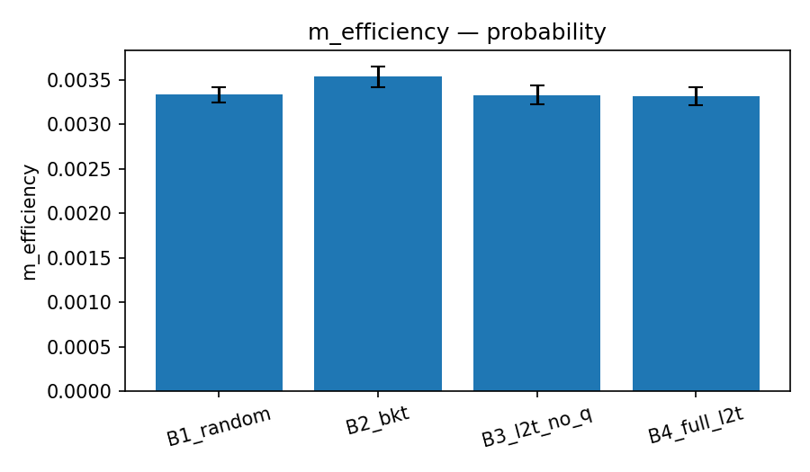
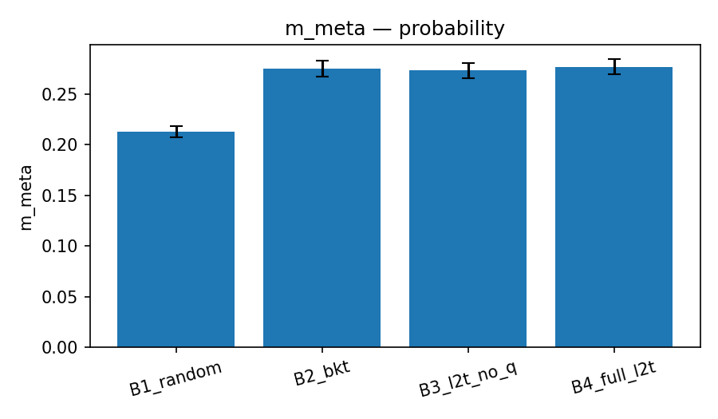
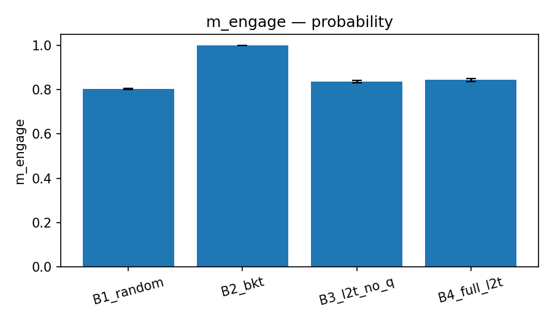
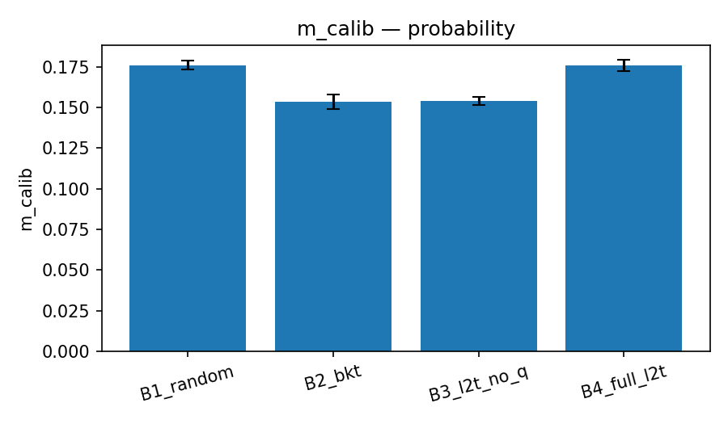


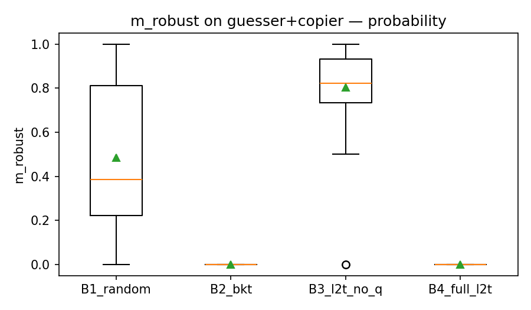